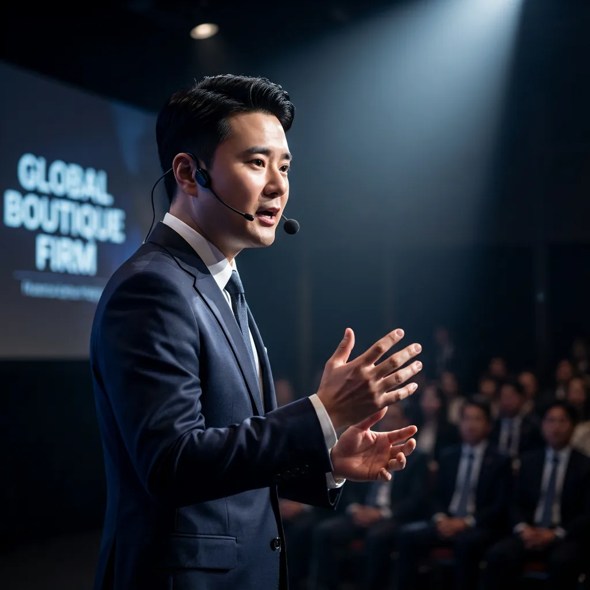
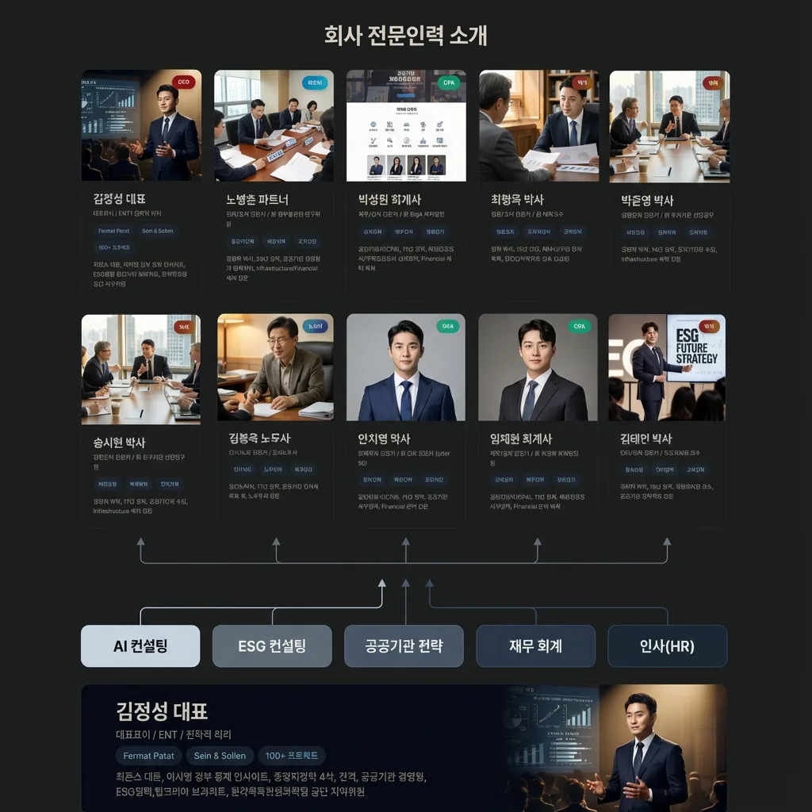
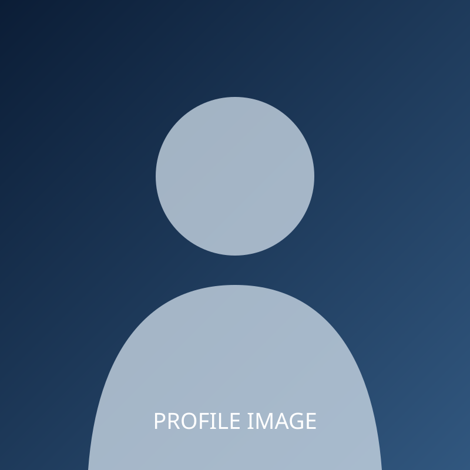
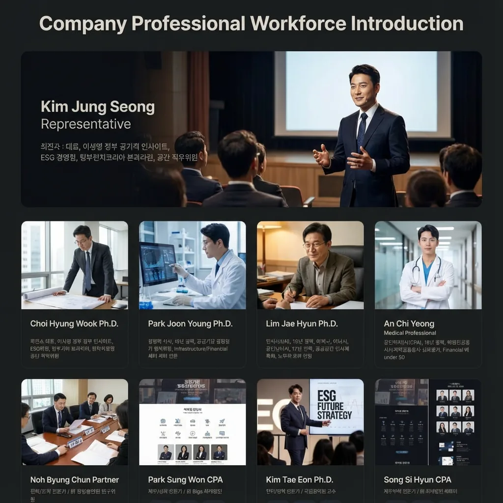
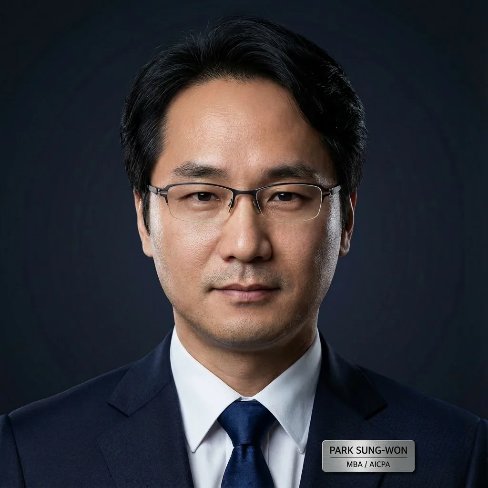

ENTJ 전략적 리더 / 최연소 대표
Sheer Excellence! 문제해결 전략 컨설턴트 김정성입니다.
좋은 컨설턴트는 Sein & Sollen을 함께 설계할 줄 아는 이라고 믿습니다.
문제해결은 멀리 있지 않습니다. 바로 Insight와 Outstanding의 Fermat Point입니다.
프로젝트
평균 경력 (년)
전문가
공공기관 경영 전반에 걸친 토탈 솔루션 제공
10개 핵심 섹터에서 검증된 전문 역량
30+ 프로젝트
15+ 프로젝트
12+ 프로젝트
30+ 프로젝트
20+ 프로젝트
15+ 프로젝트
12+ 프로젝트
12+ 프로젝트
8+ 프로젝트
18+ 프로젝트
Sein과 Sollen의 최적 수렴점을 찾는 8단계 전략 프레임워크
현황(Sein)의 정밀 진단 및 핵심 이슈(Key Issues) 도출
조직의 지향점 및 당위(Sollen)적 목표 수준 정의
As-Is와 To-Be 간의 Gap 정량/정성 분석
Insight & Outstanding 기반 Fermat Point 도출
최적 해결안(Solution) 구체화 및 세부 실행과제 도출
단계별 이행 로드맵(Roadmap) 수립 및 리소스 배분
과제 본격 이행(Implementation) 및 조직 내재화 지원
결과 측정(Feedback) 및 지속적 개선(CI) 체계 구축
7개 섹터 160+ 프로젝트 수행
뉴비전 수립
부점성과평가 간사
부점성과평가 간사
중장기 전략 수립
중장기 경영전략 수립
경영전략 고도화 및 조직재설계
2030 중장기 경영전략 수립
조직진단 및 인력운영계획
K-UAM 대응전략 수립
비전 2040 수립 (3기신도시)
비전 2030 수립
중장기 전략 수립
탈원전 시대 조직재설계
조직진단 및 재설계
미래전략 수립
성과평가 컨설팅
더 많은 프로젝트 실적이 궁금하신가요?
상담 신청하기공공기관 경영 혁신을 주도하는 5대 핵심 본부
공공기관 전략 본부장
경영지도사, 공공기관 경영평가 및 조직진단 20년 경력, 대형 프로젝트 총괄 PM 전문

수석전문위원
공학 박사 (UNIST/POSTECH/KAIST), 현대자동차 수석연구원 출신, R&D 및 미래 전략 수립 자문

정책/언어 수석전문위원
국어학 박사, 국립국어원 교수, 공공언어 및 정책 커뮤니케이션 전략 자문
글로벌 전략/통역 전문위원
경영학 석사(MBA), 전문 동시통역사, 공공기관 해외사업 및 국제협력 전략 자문
ESG 컨설팅 본부장
변호사, 11년 경력, 공공기관 지배구조 개선 및 법률 리스크 관리 총괄
환경/에너지 수석전문위원
법학 박사, 에너지/국방 섹터 전문, 환경 규제 대응 및 지속가능경영 전략 수립
AI/DT 컨설팅 본부장
前 SK·CDN Korea, 공공기관 데이터 기반 의사결정 체계 및 AI 도입 전략 총괄

기술경영 수석전문위원
경영학 박사, 인프라/기술 섹터 전문, 디지털 혁신 및 기술 사업화 전략 자문
재무/회계 본부장
공인회계사(CPA), 재무분석 및 예산 효율화 전략 수립 총괄

재무/회계 수석전문위원
AICPA (미국공인회계사), MBA, 글로벌 재무 전략 및 관리회계 시스템 구축 전문가
경제분석 수석전문위원
CFA(국제재무분석사), 연세대 경제학과, 대형 사업 예비타당성 조사 및 경제성 분석 전문
인사/조직 본부장
공인노무사, 17년 경력, 직무 중심 인사제도 설계 및 노사 전략 총괄
보건/복지 자문위원
독일 평생건강 전문의, 근로자 건강 증진 및 안전보건 경영 시스템(중대재해처벌법) 자문
STRATEGY를 이끄는 혁신적 리더십
대표이사 / ENTJ 전략적 리더
"Sheer Excellence! 문제해결 전략 컨설턴트 김정성입니다."
좋은 컨설턴트는 현실(Sein)과 당위(Sollen)를 함께 설계할 줄 아는 이라고 믿습니다.
문제해결은 멀리 있지 않습니다. 바로 Insight와 Outstanding의 Fermat Point에 있습니다.
공공기관 경영 컨설팅 전문가가 직접 상담해드립니다
평일: 09:00 - 18:00
주말/공휴일: 이메일 문의
영업일 기준 24시간 내 회신드립니다.